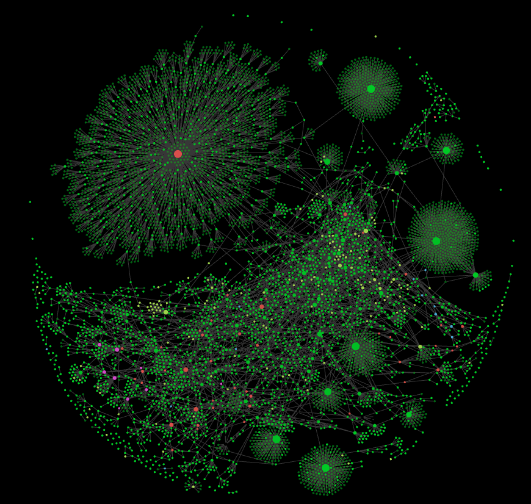

I got _very_ nerdsniped by this video and the idea of edit[ing] text at the speed of thought. Plus, it's a much more flow state-y way to interact with a computer, once you get over the initial (and formidable!) learning curve.
Cumulative hours: Loading...
I'm a fast touch-typist but I'm no good with symbols, which are important for Vim. Plus I could definitely reduce my error rate!
Cumulative hours: Loading...
(I go into more detail about my learning workflow on the My Learning Stack page)
The GOAT. It's a pain to have to review flashcards every day, but if you want to learn things thoroughly, it's absolutely worth it. Tackles the "cold start problem" when learning new topics by guaranteeing a good foundation (that is, you can ensure that the foundational concepts, definitions etc are firmly in your brain, which makes further learning and reading much much easier. "Anki makes memory a choice, rather than a haphazard event" (Michael Nielsen)
I think Obsidian is very easy to use poorly, which is why I dropped it for a few years. However I've been using it again for a few months with the Breadcrumbs community extension and it fixes my main issue with it, namely that you can spend more time being a librarian, dilligently connecting your notes together, than you spend actually getting value from it. These days I mostly use Anki, with Obsidian just being a place to map out the skeleton of a topic or project, so I know what to read into, what to make flashcards of, etc. It's a great place for scrappy working notes, it just has to be handled with caution as you can get totally nerd-sniped and waste a huge amount of time trying to organise thigns well. I really like Sasha Chapin's "Notes Against Note-Taking Systems" re: this!
Hugely underrated tool for thinking/planning/grokking. You can make a 2D, essentially infinite canvas for a project or topic. A key learning I got from my data analyst years is the stuff from Edward Tufte about how visual our brain is, how we do much better at processing visual information. So, why be stuck using essentially 1-dimensional word documents when you could have a 2D space where you can use colour, size, spatial hierarchies etc. I find it's super useful for understanding the big picture, by making diagrams and spatially related structures.
The main problem is that it's undeniably cumbersome, very mouse-heavy, etc. Muse looks like it could be a faster/more lightweight alternative.
This is such a game changer, I can't believe I waited so long to set this up! It lets you set up multiple workspaces (e.g., for coding, browser, Remarkable, studying with Anki & Notes, tracking with Beeminder & Toggl, messaging, email) with permanent layouts and very intuitive keyboard shortcuts. No more constant alt-tabbing, resizing windows, shutting down/reopening apps. Also features auto-resize, where opening a new file automatically slots it in, and closing it resizes the remaining windows. Makes interacting with the computer feel so much nicer, more like skillfully playing an instrument than clumsily poking around with the mouse.
So so good. Lets you type in terse commands and have them replaced with any text of your choosing, e.g. `:da` is replaced with today's date (2025-05-27) immediately. I also use it for recycling commands to LLMs, for example a long command to make Gemini make flashcards in the exact way I want, which I can repeat just by typing `:flash`. Also great for emojis, slack daily standup templates, symbols, etc.
A Mac app that reproduces the "Snipping Tool" from Windows - lets you take a "screenshot" but actually it just grabs the text from that area and copies it to the clipboard. Really useful for e.g. grabbing text from lecture slides in YouTube videos.
Replaces the Mac spotlight - I mainly use it for finding files much faster. Simple but useful.
A simple app that fixes the Mac default behaviour where you only have 1 clipboard slot, so as soon as you copy something new, whatever was just in your clipboard gets lost. Lets you access a history of copied items.